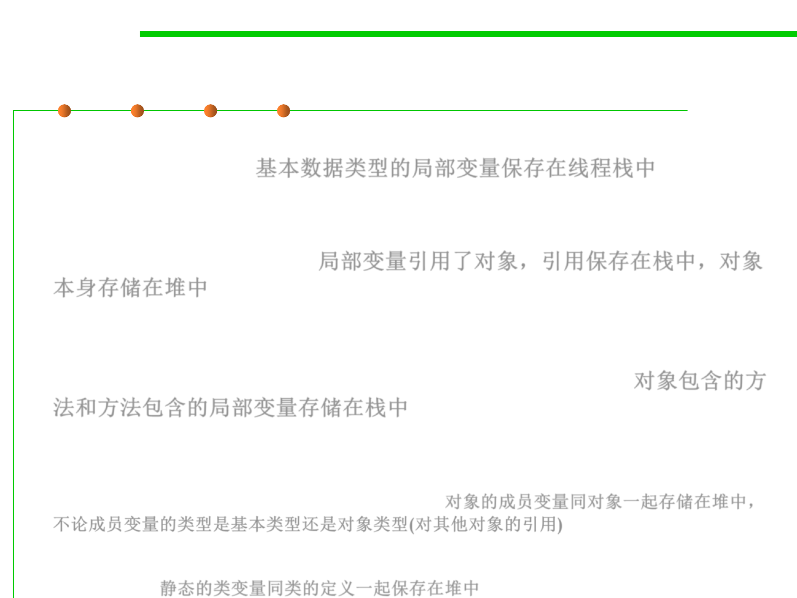

8.1 Metrics, Principles, and Methods of Construction for Performance
Some key points about Java Memory Model
▪ A local variable may be of a primitive type, in which case it is totally kept
on the thread stack. 基本数据类型的局部变量保存在线程栈中
▪ A local variable may also be a reference to an object. In that case the
reference (the local variable) is stored on the thread stack, but the object
itself if stored on the heap. 局部变量引用了对象，引用保存在栈中，对象
本身存储在堆中
▪ An object may contain methods and these methods may contain local
variables. These local variables are also stored on the thread stack, even if
the object that the method belongs to is stored on the heap. 对象包含的方
法和方法包含的局部变量存储在栈中
▪ An object‘s member variables are stored on the heap along with the
object itself. That is true both when the member variable is of a primitive
type, and if it is a reference to an object. 对象的成员变量同对象一起存储在堆中，
不论成员变量的类型是基本类型还是对象类型(对其他对象的引用)
▪ Static class variables are also stored on the heap along with the class
definition. 静态的类变量同类的定义一起保存在堆中